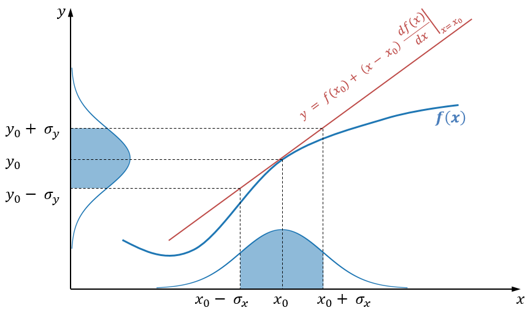
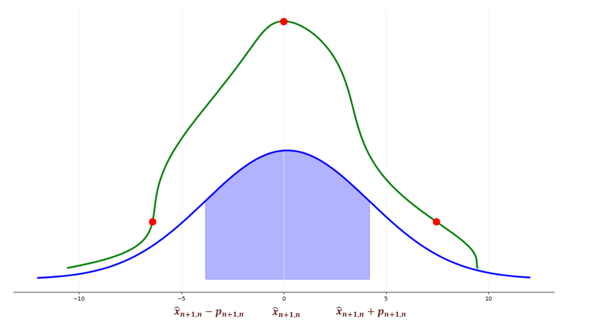

Despite their foundational role in probabilistic state-space modelling, Kalman filters remain surprisingly underrepresented in the deep learning community. Our new framework Kalman filter and his friends aims to change that.
Why Should DL Researchers Care about Kalman Filters?
Kalman filters serve as the backbone for many advanced models, including:
Gaussian Processes, used for regression and time-series analysis.
State-Space Models (SSMs) like S4/S6, crucial for sequence modelling in modern deep learning.
Hidden Markov Models (HMMs), widely applied in speech recognition and bioinformatics.
Recurrent Neural Networks (RNNs), which share conceptual similarities in sequential data processing.
Kalman filters provide a principled way to estimate hidden states from noisy observations, something neural networks often do implicitly but with less interpretability. Kalman filter is extremely powerful when the noise in the data is roughly Gaussian, and a lot of tasks in DL fit into this description. By integrating these filters into DL pipelines, we gain:
Stronger theoretical grounding – Kalman-based approaches have well-defined probabilistic properties.
Better uncertainty quantification – Unlike many DL models, Kalman filters explicitly model uncertainty.
Efficiency & interpretability – Compared to deep neural networks, Kalman filters can be computationally efficient and easier to analyze.
Theoretical Background
We will be working with a discrete-time linear dynamic system. It consists of two parts - a state equation and an observation equation. We have state variable \(x_t\) and our observed variable \(y_t\). We try to predict \(y_t\) using \(x_t\). We assume there is a linear relationship between these two variables and that there is Gaussian noise in “measurements” of both of these variables:
Where:
\(x_t\) is the hidden state at time \(t\)
\(A_t\) is the transition matrix
\(y_t\) is the observation
\(H_t\) is the observation matrix
The stochastic nature of the process is expressed with:
The Kalman filter is an online algorithm that estimates the hidden state of a dynamic system based on noisy observations. The model updates its estimation of the weights sequentially as new data comes in and provides an optimal solution (in a least-squares sense).
Algorithm
At its core, the Kalman filter operates on a predict-update cycle. This process is Bayesian, meaning the filter maintains a probabilistic belief over the system’s state, updating it as new information comes in.
1. Predict (estimation) step
Given the previous state estimate \(\hat{x}_{t-1|t-1}\), we predict the next state:
2. Update (correction) step
Compute Kalman Gain:
\[K_t = P_{t|t-1} H^T (H P_{t|t-1} H^T + R)^{-1}\]Update state estimate:
\[\hat{x}_{t|t} = \hat{x}_{t|t-1} + K_t (y_t - H \hat{x}_{t|t-1})\]Update uncertainty:
\[P_{t|t} = (I - K_t H) P_{t|t-1}\]
{kind=link}
Kalman Gain
The Kalman Gain, denoted as \(K_t\), serves as an adaptive weighting mechanism in the estimation step. It assigns more weight to the more accurate estimate — typically, the one with a smaller Mean Squared Error (MSE).
As a result:
A larger \(K\) suggests greater trust in the new measurements.
A smaller \(K\) implies greater confidence in the model prediction.
Non-Linear Kalman Filters
You might have noticed that everything above is just a fancy linear model. To deal with non-linearity, there exist several modifications of Kalman filters.
Extended Kalman Filter (EKF)
{kind=link}
EKF uses first-order Taylor approximation (linearization). The only change is that instead of matrices \(A\) and \(H\), we use their Jacobians.
Unscented Kalman Filter (UKF)
{kind=link}
The Unscented Kalman Filter avoids derivatives and instead uses the unscented transform:
Select \(2N\) sigma points from the input distribution.
Propagate them through the non-linear function:
\[\mathcal{X}_{t+1, t} = \left[ \mathcal{X}_{t+1, t}^{(0)}, \mathcal{X}_{t+1, t}^{(1)}, \ldots, \mathcal{X}_{t+1, t}^{(2N)} \right]\]Compute sigma point weights \(w_i\).
Use them to estimate mean and covariance:
\[\hat{\boldsymbol{x}}_{t + 1, t} = \sum_{i=0}^{2N} w_i \mathcal{X}_{t+1, t}^{(i)}\]\[\boldsymbol{P}_{t + 1, t} = \sum_{i=0}^{2N} w_i \left( \mathcal{X}_{t+1, t}^{(i)} - \hat{\boldsymbol{x}}_{t + 1, t} \right)^2\]
Our Framework
We provide a clean, minimalistic, and extensible implementation of different Kalman filter variants:
Standard Kalman Filter – The foundational model for linear state estimation.
Extended Kalman Filter (EKF) – Handling nonlinear dynamics through local linearization.
Unscented Kalman Filter (UKF) – A more accurate approach using sigma-point sampling.
Variational Kalman Filters – Leveraging modern probabilistic techniques for scalable inference.
After installing the package, you can quickly set up and run a Kalman filter with just a few lines of code.